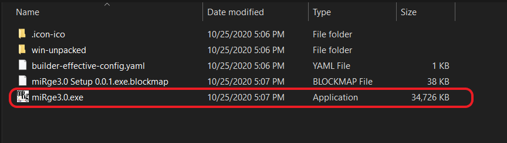
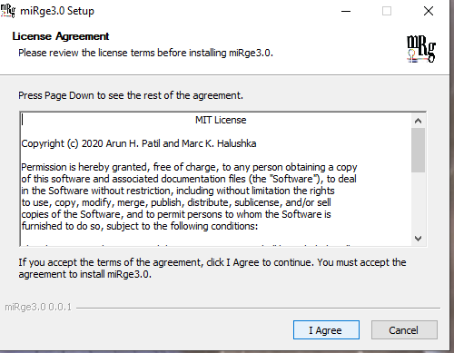

Installation¶
Linux OS¶
Welcome to installation protocol for Linux OS¶
Install python3.8 and R¶
This installation protocol is based on Ubuntu, please use the commands that suit your Linux distribution. For example, apt should be replaced with yum in Fedora/CentOS.
Search and start the terminal
Follow the commands to update Ubuntu and install python 3.8
A password will be prompted when you typesudo, use the one you have set during Ubuntu (or your distro) installation.
sudo apt update
sudo apt install software-properties-common
sudo add-apt-repository ppa:deadsnakes/ppa
sudo apt install python3.8
sudo apt install python3-setuptools
sudo apt install python3-pip
sudo apt install r-base
Linux (Ubuntu 18.04) comes with python2.7 installed by default. To use python3.8, creating an alias in .bashrc would do the trick.
Use vim editor if you are familiar using this editor vi .bashrc or open the .bashrc using text editor by gedit .bashrc and add the following line at the bottom of the text.
alias python=python3.8
Save and exit. After that type bash on the command line -Or- simply, close the terminal.
Installing miRge3.0 with conda¶
conda install -c bioconda mirge3
If you want to use your own environment, please follow the instruction here.
Updating miRge3.0 with conda¶
conda update mirge3
Installing miRge3.0 with PyPi¶
First install miRge dependenceis¶
Search and start the terminal, execute the command below:
python3.8 -m pip install --user cutadapt reportlab==3.5.42 biopython==1.78 scikit-learn==0.23.1 hypothesis==5.15.1 pytest==5.4.2 scipy==1.4.1 matplotlib==3.2.1 joblib==0.15.1 pandas==1.0.3 future==0.18.2
If you encounter a WARNING, like below:
WARNING: The script cutadapt is installed in '/home/arun/.local/bin' which is not on PATH.
Consider adding this directory to PATH or, if you prefer to suppress this warning, use --no-warn-script-location.
Then, open a new terminal window or type cd to get to home directory. Add bin folder PATH to the .bashrc, as shown below:
Example: export PATH=$PATH:"/home/arun/.local/bin"
Remeber to add your path /PATH_TO_USERS/bin.
Install miRge3.0 by this simple command¶
python3.8 -m pip install --user mirge3
To upgrade miRge3.0¶
python3.8 -m pip install --user --upgrade mirge3
Install additional C-libraries based tools¶
Install Bowtie¶
Search and start the terminal
Download bowtie
wget -O bowtie-1.3.0-linux-x86_64.zip https://sourceforge.net/projects/bowtie-bio/files/bowtie/1.3.0/bowtie-1.3.0-linux-x86_64.zip/download
unzip bowtie-1.3.0-linux-x86_64.zipcd bowtie-1.3.0-linux-x86_64pwd/home/arun/software/bowtie-1.3.0-linux-x86_64
Add these bowtie binaries to .bashrc as shown below:
export PATH=$PATH:"/home/arun/software/bowtie-1.3.0-linux-x86_64"
After that type
bashon the command line -Or- simply, close the terminal.
Install Samtools¶
Search and start the terminal, execute the below command:
sudo apt install samtools
Install RNA Fold¶
Search and start the terminal, execute the following commands:
wget "https://www.tbi.univie.ac.at/RNA/download/sourcecode/2_4_x/ViennaRNA-2.4.16.tar.gz"
cd ViennaRNA-2.4.16
sudo ./configure
sudo make
sudo make install
GUI requirements¶
Providing system wide access to miRge3.0, cutadapt, bowtie and bowtie-build, please type or (copy and paste) and submit each of the following commands on the terminal:
NOTE: Make sure to change your path to python bin folder; Replace /home/arun/.local/ with /Path on your computer/.
Search and start the terminal, execute the following commands:
sudo ln -s /home/arun/.local/bin/miRge3.0 /usr/local/bin/miRge3.0
sudo ln -s /home/arun/.local/bin/cutadapt /usr/local/bin/cutadapt
sudo ln -s /home/arun/software/bowtie-1.3.0-linux-x86_64/bowtie /usr/local/bin/bowtie
sudo ln -s /home/arun/software/bowtie-1.3.0-linux-x86_64/bowtie-build /usr/local/bin/bowtie-build
sudo ln -s /home/arun/software/bowtie-1.3.0-linux-x86_64/bowtie-inspect /usr/local/bin/bowtie-inspect
Downloading FASTQ files from NCBI:¶
Search and start the terminal, follow the commands below:
wget -c https://ftp-trace.ncbi.nlm.nih.gov/sra/sdk/2.10.8/sratoolkit.2.10.8-ubuntu64.tar.gz
tar -xvzf sratoolkit.2.10.8-ubuntu64.tar.gz
cd sratoolkit.2.10.8-ubuntu64/bin
pwd/home/arun/software/sratoolkit.2.10.8-ubuntu64/bin
Add to .bashrc
cdvi .bashrcorgedit .bashrcand add the following line at the bottom of the pageexport PATH=$PATH:"/home/arun/software/sratoolkit.2.10.8-ubuntu64/bin"
Save and exit. After that type bash on the command line -Or- simply, close the terminal.
vdb-config
Please follow these instructions for vdb-config here
Downloading FASTQ files, please type the following:
fastq-dump [options] < accession >
Example: fastq-dump SRR772403 SRR772404
macOS¶
Welcome to installation protocol for Mac OS¶
System prerequisites¶
Search and start the terminal, execute the following commands
ruby -e "$(curl -fsSL https://raw.githubusercontent.com/Homebrew/install/master/install)"brew updatebrew install wget
Install python3.7¶
Please note, any version other than py3.7 causes error in Mac with multiprocessing, issues-1, issues-2.
Download python 3.7.5 from python.org
Search and start the terminal, execute the following commands
wget https://www.python.org/ftp/python/3.7.5/python-3.7.5-macosx10.9.pkg
sudo installer -pkg python-3.7.5-macosx10.9.pkg -target /
Mac comes with python2.7 installed by default. To use python3.7, creating an alias in .bash_profile would do the trick
Open a new terminal window. Use vim editor if you are familiar using this editor vi .bash_profile or open the .bash_profile using text editor by open -e .bash_profile and add the following line at the bottom of the text.
alias python=python3.7
Save and exit. After that type source ~/.bash_profile on the command line -Or- simply, close the terminal.
Installing miRge3.0 with conda¶
conda install -c bioconda mirge3
If you want to use your own environment, please follow the instruction here.
Error: Type samtools --version and make sure you don't encounter any libcrypto.so errors. If you do encounter, simply reinstall samtools with conda as shown below:
conda install samtools. If the error still persists, please let us know.
Updating miRge3.0 with conda¶
conda update mirge3
Installing miRge3.0 with PyPi¶
First install miRge dependenceis¶
Search and start the terminal, execute the following command
python3.7 -m pip install --user cutadapt reportlab==3.5.42 biopython==1.78 scikit-learn==0.23.1 hypothesis==5.15.1 pytest==5.4.2 scipy==1.4.1 matplotlib==3.2.1 joblib==0.15.1 pandas==1.0.3 future==0.18.2
If you encounter a WARNING, like below:
WARNING: The script cutadapt is installed in '/Users/loaneruser/Library/Python/3.7/bin' which is not on PATH.
Consider adding this directory to PATH or, if you prefer to suppress this warning, use --no-warn-script-location.
Then, open a new terminal window or type cd to get to home directory. Add bin folder PATH to the .bash_profile, as shown below:
Example: export PATH=$PATH:"/Users/loaneruser/Library/Python/3.7/bin/"
Remeber to add your path /PATH_TO_USERS/Python/3.7/bin.
Install miRge3.0 by this simple command¶
python3.7 -m pip install --user mirge3
To upgrade miRge3.0¶
python3.7 -m pip install --user --upgrade mirge3
Install additional C-libraries based tools¶
Install Bowtie¶
Search and start the terminal, execute the following command
Download bowtie
wget -O bowtie-1.3.0-macos-x86_64.zip https://sourceforge.net/projects/bowtie-bio/files/bowtie/1.3.0/bowtie-1.3.0-macos-x86_64.zip/download
unzip bowtie-1.3.0-macos-x86_64.zipcd bowtie-1.3.0-macos-x86_64pwd/Users/loaneruser/Software/bowtie-1.3.0-macos-x86_64
Add these bowtie binaries to .bash_profile as shown below:
export PATH=$PATH:"/Users/loaneruser/Software/bowtie-1.3.0-macos-x86_64/"
After that type
source ~/.bash_profileon the command line -Or- simply, close the terminal.
Install Samtools¶
Search and start the terminal, execute the following command
brew install samtools
Install RNA Fold¶
wget https://www.tbi.univie.ac.at/RNA/download/sourcecode/2_4_x/ViennaRNA-2.4.16.tar.gz
tar -xvzf ViennaRNA-2.4.16.tar.gz
cd ViennaRNA-2.4.16
sudo ./configure
sudo make
sudo make install
Downloading FASTQ files from NCBI:¶
Search and start the terminal, execute the following command
wget -c https://ftp-trace.ncbi.nlm.nih.gov/sra/sdk/2.10.8/sratoolkit.2.10.8-mac64.tar.gz
tar -xvzf sratoolkit.2.10.8-mac64.tar.gz
cd sratoolkit.2.10.8-mac64/bin
pwd/Users/loaneruser/Software/sratoolkit.2.10.8-mac64/bin
Add to .bash_profile
cdvi .bash_profileoropen -e .bash_profileand add the following line at the bottom of the pageexport PATH=$PATH:"/Users/loaneruser/Software/sratoolkit.2.10.8-mac64/bin"
Save and exit. After that type source ~/.bash_profile on the command line -Or- simply, close the terminal.
vdb-config
Please follow these instructions for vdb-config here
Downloading FASTQ files, please type the following:
fastq-dump [options] < accession >
Example: fastq-dump SRR772403 SRR772404
GUI requirements¶
Providing system wide access to miRge3.0, cutadapt, bowtie and bowtie-build, please type or (copy and paste) and submit each of the following commands on the terminal:
NOTE: Make sure to change your path to python bin folder; Replace /Users/loaneruser/Library/ with /Path on your computer/.
Search and start the terminal, execute the following command
sudo ln -s /Users/loaneruser/Library/Python/3.7/bin/miRge3.0 /usr/local/bin/miRge3.0
sudo ln -s /Users/loaneruser/Library/Python/3.7/bin/cutadapt /usr/local/bin/cutadapt
sudo ln -s /Users/loaneruser/Software/bowtie-1.3.0-macos-x86_64/bowtie /usr/local/bin/bowtie
sudo ln -s /Users/loaneruser/Software/bowtie-1.3.0-macos-x86_64/bowtie-build /usr/local/bin/bowtie-build
sudo ln -s /Users/loaneruser/Software/bowtie-1.3.0-macos-x86_64/bowtie-inspect /usr/local/bin/bowtie-inspect
Windows OS¶
Welcome to installation protocol for Windows OS¶
System prerequisites¶
Require Windows 10Require WSL and Ubuntu 18
Install WSL¶
Please follow one of the following guidlines for installing WSL and Ubuntu 18.04 (recommended Ubuntu distribution)
Quick and easy way
TopTechSkills: Watch the first 1:30 seconds, more info.
Patreon: Watch the first 4:04 seconds.
Please remember the password prompted during ubuntu installationand use when prompted.
Install python3.8 and R¶
Search and start Ubuntu

Follow the commands to update ubuntu and install python 3.8
A password will be prompted when you typesudo, use the one you have set during Ubuntu installation.
sudo apt update
sudo apt install software-properties-common
sudo add-apt-repository ppa:deadsnakes/ppa
sudo apt install python3.8
sudo apt install python3-setuptools
sudo apt install python3-pip
sudo apt install r-base
Linux (Ubuntu 18.04) comes with python2.7 installed by default. To use python3.8, creating an alias in .bashrc would do the trick
Use vim editor if you are familiar using this editor vi .bashrc or open the .bashrc using text editor by gedit .bashrc and add the following line at the bottom of the text.
alias python=python3.8
Save and exit. After that type bash on the command line -Or- simply, close the terminal.
Installing miRge3.0 with conda¶
conda install -c bioconda mirge3
If you want to use your own environment, please follow the instruction here.
Updating miRge3.0 with conda¶
conda update mirge3
Installing miRge3.0 with PyPi¶
First install miRge dependenceis¶
Search and start Ubuntu, execute the following command
python3.8 -m pip install --user cutadapt reportlab==3.5.42 biopython==1.78 scikit-learn==0.23.1 hypothesis==5.15.1 pytest==5.4.2 scipy==1.4.1 matplotlib==3.2.1 joblib==0.15.1 pandas==1.0.3 future==0.18.2
If you encounter a WARNING, like below:
WARNING: The script cutadapt is installed in '/home/arun/.local/bin' which is not on PATH.
Consider adding this directory to PATH or, if you prefer to suppress this warning, use --no-warn-script-location.
Then, open a new terminal window or type cd to get to home directory. Add bin folder PATH to the .bashrc, as shown below:
Example: export PATH=$PATH:"/home/arun/.local/bin"
Remeber to add your path /PATH_TO_USERS/bin.
Install miRge3.0 by this simple command¶
python3.8 -m pip install --user mirge3
To upgrade miRge3.0¶
python3.8 -m pip install --user --upgrade mirge3
Install additional C-libraries based tools¶
Install Bowtie¶
Search and start Ubuntu, execute the following command
Download bowtie
wget -O bowtie-1.3.0-linux-x86_64.zip https://sourceforge.net/projects/bowtie-bio/files/bowtie/1.3.0/bowtie-1.3.0-linux-x86_64.zip/download
unzip bowtie-1.3.0-linux-x86_64.zipcd bowtie-1.3.0-linux-x86_64.zippwd/home/arun/software/bowtie-1.3.0-linux-x86_64
Add these bowtie binaries to .bashrc as shown below:
export PATH=$PATH:"/home/arun/software/bowtie-1.3.0-linux-x86_64"
After that type
bashon the command line -Or- simply, close the terminal.
Install Samtools¶
Search and start Ubuntu, execute the following command
sudo apt install samtools
Install RNA Fold¶
wget "https://www.tbi.univie.ac.at/RNA/download/sourcecode/2_4_x/ViennaRNA-2.4.16.tar.gz"
cd ViennaRNA-2.4.16
sudo ./configure
sudo make
sudo make install
GUI requirements¶
Providing system wide access to miRge3.0, cutadapt, bowtie and bowtie-build, please type or (copy and paste) and submit each of the following commands on the terminal:
NOTE: Make sure to change your path to python bin folder; Replace /home/arun/.local/ with /Path on your computer/.
Search and start Ubuntu, execute the following command
sudo ln -s /home/arun/.local/bin/miRge3.0 /usr/local/bin/miRge3.0
sudo ln -s /home/arun/.local/bin/cutadapt /usr/local/bin/cutadapt
sudo ln -s /home/arun/software/bowtie-1.3.0-linux-x86_64/bowtie /usr/local/bin/bowtie
sudo ln -s /home/arun/software/bowtie-1.3.0-linux-x86_64/bowtie-build /usr/local/bin/bowtie-build
sudo ln -s /home/arun/software/bowtie-1.3.0-linux-x86_64/bowtie-inspect /usr/local/bin/bowtie-inspect
Change Command Prompt Properties¶
One last thing to avoid an error The directory name is invalid:
Type cmd in Windows search box, right-click on Command Prompt and select Open file location.

Right-click on Command Prompt and click on Properties.

Under the Shortcut tab, replace
Start inoption by changing the value%HOMEDRIVE%%HOMEPATH%to%WINDIR%. Click OK.

Reference
1. Stellarinfo
2. Microsoft
Obtaining and installing GUI application¶
Download GUI for Windows 10
Double click miRge3.0.exe to install miRge3.0 windows GUI application. 
Click Next to complete miRge3.0 installation 
Uninstalling miRge3.0¶
Step 1: To uninstall open the terminal and type:
python3.8 -m pip uninstall mirge3
Conda uninstall:
conda remove mirge3
For more details on conda uninstallation process, click here
Step 2:
Search miRge3.0, right click and select uninstall

Under
Programs and Features, select miRge3.0 and clickUninstall
Then select
Uninstallby clickingOk. Done.